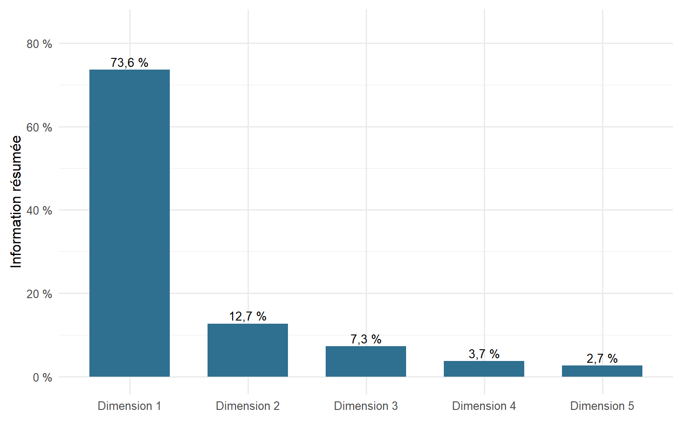
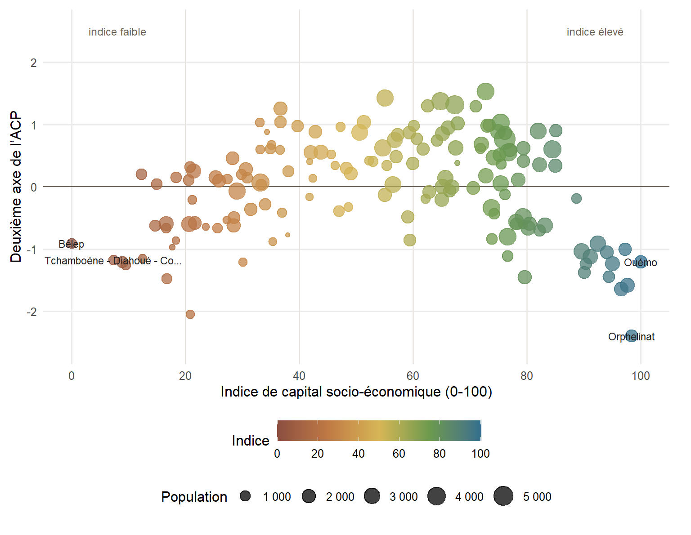
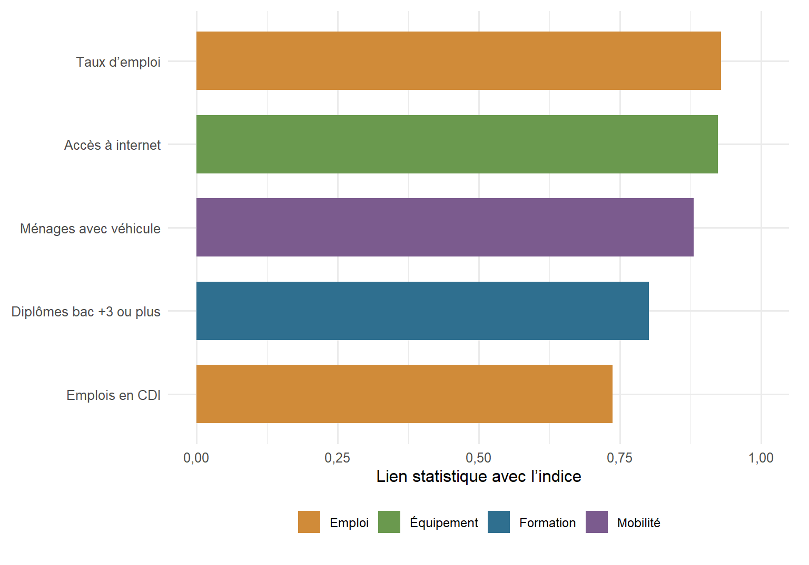
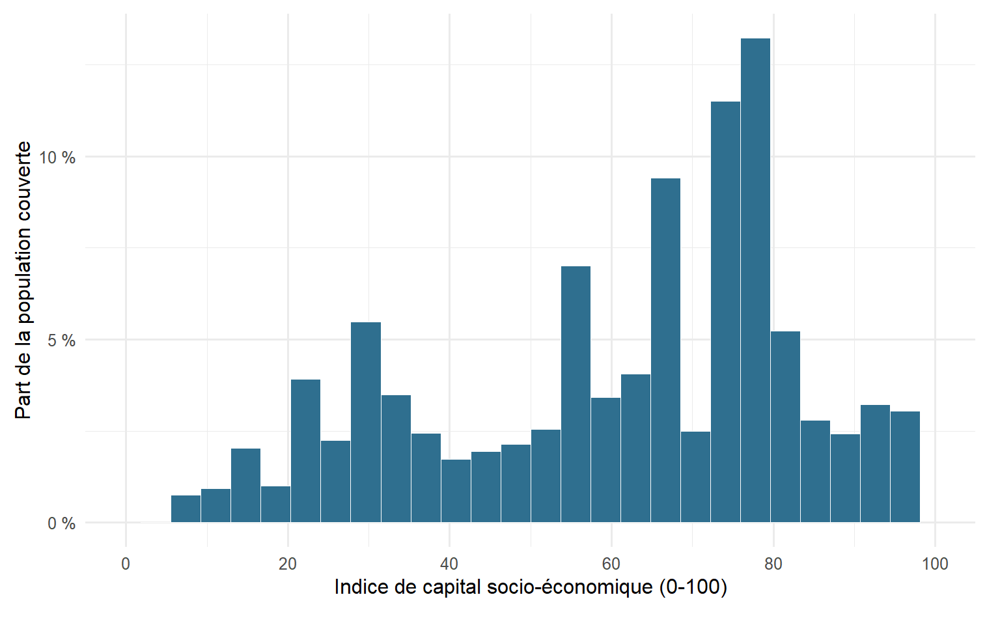
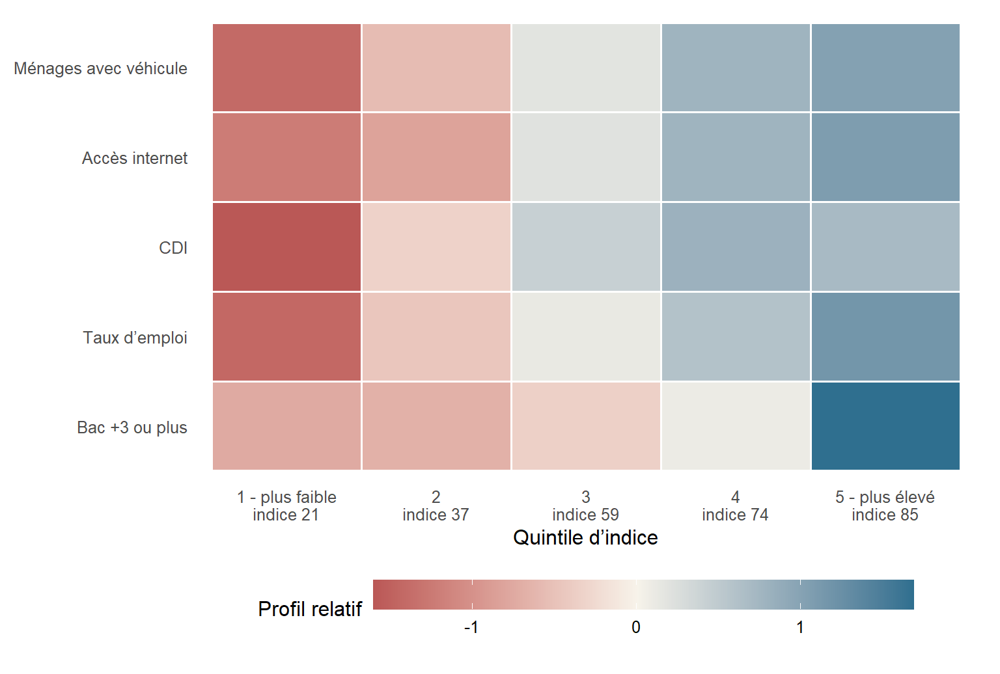
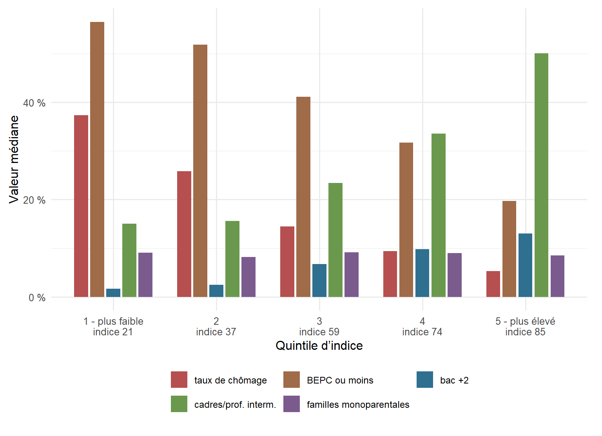
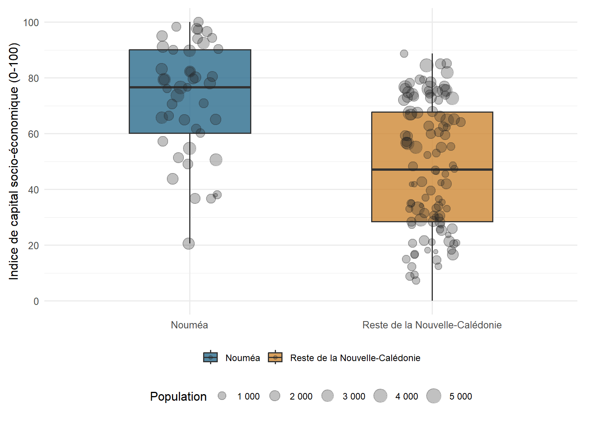
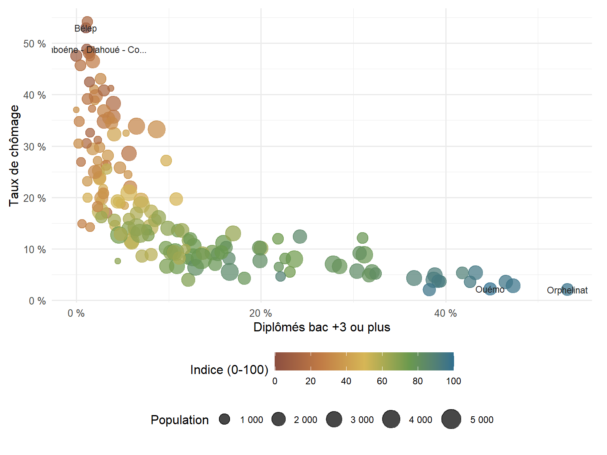

En bref
- L’indice synthétise cinq indicateurs du RGP 2019 : diplôme supérieur, emploi, CDI, accès à internet et motorisation.
- La première dimension de l’ACP capte 73,6 % de l’information, signe d’un gradient territorial très structuré.
- Les cartes lissées servent à rendre ce gradient lisible ; les calculs restent réalisés à l’échelle des IRIS.
- L’indice décrit des territoires statistiques, pas des revenus individuels ni des patrimoines.
Résumé
Cette note propose une lecture exploratoire des contrastes socio-économiques en Nouvelle-Calédonie à partir des IRIS du recensement général de la population 2019. L’objectif est de résumer plusieurs indicateurs sociaux, économiques et résidentiels en un indice lisible de 0 à 100, puis d’en proposer une lecture cartographique lissée.
La méthode utilisée est une analyse en composantes principales (ACP). Elle ne crée pas une mesure officielle de la richesse, mais un indicateur statistique : les zones qui combinent davantage de diplômés du supérieur, un emploi plus fréquent, plus de CDI, plus d’accès à internet et davantage d’équipement automobile obtiennent un indice plus élevé.
La première dimension de l’ACP résume 73,6 % de l’information contenue dans les cinq indicateurs mobilisés. C’est beaucoup pour une seule dimension : cela signifie que ces variables forment un gradient territorial assez cohérent. Pour le dire simplement, les indicateurs ne racontent pas cinq histoires séparées ; ils décrivent largement un même axe d’inégalités socio-économiques.
Les cartes lissées, finalisées dans QGIS, doivent être lues comme des supports de visualisation. Les résultats statistiques ci-dessous restent calculés à partir des IRIS et des variables du recensement.
Avertissement
Le terme de capital socio-économique est utilisé ici comme un raccourci analytique. Il ne désigne ni le revenu réel des habitants, ni le patrimoine, ni une valeur individuelle. Il synthétise des caractéristiques observées à l’échelle de territoires statistiques.
Il faut donc éviter deux contresens. D’abord, un IRIS avec un indice faible n’est pas un territoire “pauvre” au sens absolu : il présente seulement, au regard des variables retenues, un profil moins doté que les autres IRIS. Ensuite, l’indice ne dit rien des trajectoires individuelles. Dans un même quartier, des situations sociales très différentes peuvent coexister.
Cette note doit être lue comme une première exploration méthodologique, utile pour cartographier des contrastes territoriaux et ouvrir la discussion sur les inégalités spatiales en Nouvelle-Calédonie.
Pourquoi construire un indice ?
Les inégalités territoriales ne se résument pas facilement à une seule variable. Le chômage donne une information importante, mais il ne dit pas tout. Le niveau de diplôme renseigne une autre dimension. L’accès à internet, la motorisation ou le type d’emploi apportent encore d’autres éléments.
Pris séparément, ces indicateurs peuvent donner une lecture fragmentée du territoire. L’intérêt d’un indice synthétique est de répondre à une question simple : quels espaces cumulent plusieurs signes de dotation socio-économique, et lesquels cumulent plutôt plusieurs fragilités ?
L’objectif n’est donc pas de remplacer les indicateurs de base. Au contraire, l’indice sert à les organiser. Il permet de passer d’une série de cartes thématiques à une lecture plus globale, tout en gardant la possibilité de revenir aux variables qui composent l’indice.
Les données mobilisées
L’analyse repose sur les IRIS du RGP 2019 et sur cinq indicateurs.
C’est quoi un IRIS ?
Un IRIS est une petite zone statistique utilisée pour diffuser les résultats du recensement. On peut le lire comme un découpage infra-communal : plus fin qu’une commune, mais pas aussi précis qu’une adresse ou qu’une rue.
Dans cet article, chaque IRIS reçoit un indice de capital socio-économique entre 0 et 100. Il faut donc lire les résultats comme des profils de territoires, pas comme des informations sur chaque habitant.
Les variables retenues dans l’indice sont :
- la part de diplômés de niveau bac +3 ou plus ;
- le taux d’emploi ;
- la part de CDI parmi les contrats ;
- la part de ménages ayant accès à internet ;
- la part de ménages disposant d’un véhicule.
Pourquoi certaines variables ne sont pas dans l’indice ?
Lorsque deux variables sont trop corrélées entre elles, le choix est fait de n’en garder qu’une seule car inclure les deux reviendrait à donner un poids trop important à une même dimension. Par exemple, la part de cadres et professions intermédiaires est très corrélée à la part de diplômés bac +3 ou plus : 0,93. Pour éviter de donner trop de poids à une même dimension, une seule variable de formation est donc conservée.
Plus généralement, lorsqu’une variable apporte surtout une information déjà présente dans une autre variable retenue, elle est laissée de côté pour la construction de l’indice.
Lire les cartes
À ce stade, on peut déjà lire les cartes comme une première synthèse. Elles représentent l’indice de capital socio-économique sur une échelle de 0 à 100 : les valeurs élevées signalent des espaces où les indicateurs de diplôme, d’emploi stable, d’accès à internet et de motorisation se cumulent davantage ; les valeurs faibles indiquent plutôt un cumul relatif de fragilités au regard des variables retenues.
Les cartes sont lissées pour faire apparaître des gradients territoriaux. Elles ne remplacent pas les valeurs calculées à l’échelle des IRIS, et ne doivent pas être lues comme une mesure précise à l’adresse ou à la parcelle.
Comment le lissage est construit ?
Le score de chaque IRIS est d’abord attribué aux cellules habitées de la grille de population. Cette étape évite de représenter de la même manière les espaces habités et les espaces vides.
Ces cellules sont ensuite transformées en surface continue : les zones sans cellule habitée sont complétées par la valeur habitée la plus proche, puis un lissage gaussien adoucit les ruptures entre cellules voisines. La carte obtenue aide donc à lire les continuités spatiales, mais les valeurs de référence restent celles des IRIS.
Les classes de couleur visibles sur les cartes sont construites dans QGIS à partir de légendes discrètes en quintiles. Elles ont donc une fonction cartographique : rendre les contrastes lisibles sur chaque carte. Elles ne doivent pas être confondues avec les quintiles analytiques présentés plus loin pour résumer les tableaux et graphiques.
À l’échelle de la Nouvelle-Calédonie, la carte donne une lecture des grands contrastes territoriaux. Les zones aux indices élevés signalent des espaces où se concentrent plus souvent les profils d’emploi, de diplôme et d’équipement les plus favorables. Les zones aux indices faibles ne doivent pas être interprétées comme des “poches de pauvreté” au sens strict : elles indiquent plutôt un cumul relatif de fragilités au regard des variables retenues.

La carte de Nouméa utilise une échelle locale, construite uniquement pour lire les différences internes à la commune. Elle ne sert pas à comparer directement Nouméa avec le reste du territoire, mais à faire ressortir les continuités, les ruptures et les gradients entre quartiers proches. Ce choix privilégie la lisibilité des contrastes intra-urbains, qui seraient largement atténués avec l’échelle de la carte générale.
Ce que résume l’ACP
La première dimension concentre 73,6 % de la variance totale, tandis que la deuxième dimension n’en résume que 12,7 %. Autrement dit, l’essentiel du signal statistique est porté par un axe principal.

Le graphique ci-dessous place chaque IRIS dans le plan statistique de l’ACP. L’axe horizontal reprend l’indice final sur l’échelle 0-100 : plus on va vers la droite, plus l’IRIS cumule les indicateurs de dotation retenus. L’axe vertical correspond à la deuxième dimension de l’ACP. Elle apporte une nuance, mais elle résume beaucoup moins d’information que l’axe principal.

Cette représentation aide à comprendre l’indice autrement que par la carte. Les IRIS situés à gauche et à droite sont nettement différenciés sur le gradient principal. Les points proches du centre correspondent à des profils plus intermédiaires. La dispersion verticale rappelle qu’il existe aussi des nuances secondaires entre IRIS, même lorsque leur niveau d’indice est proche.
Comment lire le deuxième axe ?
Le deuxième axe de l’ACP est une dimension secondaire : il ne sert pas à dire si un IRIS est “plus” ou “moins” doté. Cette lecture se fait surtout de gauche à droite, avec l’indice 0-100. L’axe vertical sert plutôt à comparer des profils différents parmi des IRIS qui peuvent avoir un niveau d’indice proche.
Dans cette analyse, ce deuxième axe résume 12,7 % de l’information. Les points situés plus haut correspondent plutôt à des IRIS où la dimension “emploi stable” ressort davantage, notamment la part d’emplois en CDI. Les points situés plus bas correspondent plutôt à des IRIS où la dimension “diplôme supérieur” ressort davantage, notamment la part de diplômés bac +3 ou plus.
Le taux d’emploi, l’accès à internet et la motorisation pèsent très peu sur cette dimension secondaire. Autrement dit, l’axe vertical nuance le gradient principal : à indice proche, il aide à distinguer des profils davantage marqués par la stabilité de l’emploi de profils davantage marqués par le diplôme supérieur.

Le graphique montre que l’indice est particulièrement structuré par l’emploi, le niveau de diplôme, l’accès à internet et la motorisation. Les variables ne pèsent pas exactement de la même manière, mais elles contribuent toutes au même gradient : leur lien statistique avec l’indice est positif et élevé.
Distribution de l’indice
Pour rendre le résultat plus compréhensible, la coordonnée brute de l’ACP est transformée en indice de 0 à 100. Cette transformation ne change ni le classement des IRIS, ni les écarts relatifs entre eux : elle remplace simplement une échelle statistique abstraite par une échelle de lecture plus directe. 0 correspond à l’IRIS le plus faiblement doté dans l’analyse, 100 à l’IRIS le plus fortement doté. Ce n’est donc pas une note scolaire, mais une position relative sur l’axe socio-économique construit par l’ACP.

Cette distribution permet d’éviter une lecture uniquement cartographique. Elle montre si la population est plutôt concentrée autour de profils intermédiaires ou si une part importante se situe dans des IRIS proches des extrémités de l’indice.
Profils par niveau d’indice
Pour rendre l’indice plus lisible, les IRIS sont classés ici en cinq groupes de taille comparable, de l’indice le plus faible à l’indice le plus élevé. Ces groupes sont des quintiles analytiques : ils servent uniquement à résumer les profils statistiques dans l’article. Ils ne correspondent pas nécessairement aux classes utilisées dans les cartes, dont les légendes sont produites séparément dans QGIS.
Les tableaux ci-dessous séparent volontairement deux usages. Le premier reprend les variables qui construisent directement l’indice. Le second ajoute des repères descriptifs, qui n’entrent pas dans l’ACP mais aident à comprendre les profils sociaux associés à chaque niveau d’indice.
| quintile d’indice | IRIS | population | indice médian (0-100) |
Variables de construction de l’indice
|
||||
|---|---|---|---|---|---|---|---|---|
| bac +3 ou plus (%) | taux d’emploi (%) | CDI (%) | accès internet (%) | ménages avec véhicule (%) | ||||
| 1 - plus faible | 31 | 38 440 | 20,6 | 1,7 | 38,0 | 43,4 | 14,4 | 46,6 |
| 2 | 31 | 33 616 | 36,7 | 2,6 | 51,6 | 54,6 | 26,5 | 60,3 |
| 3 | 31 | 59 186 | 59,0 | 6,5 | 59,6 | 61,3 | 57,2 | 72,4 |
| 4 | 31 | 72 224 | 73,7 | 12,1 | 66,3 | 64,7 | 74,2 | 82,0 |
| 5 - plus élevé | 31 | 63 736 | 84,9 | 31,7 | 74,2 | 63,7 | 83,0 | 85,9 |
| Lecture : groupes analytiques en quintiles, utilisés pour résumer les profils statistiques ; les pourcentages sont les médianes des IRIS de chaque groupe. | ||||||||

Ce graphique synthétise le fonctionnement de l’indice : plus on se déplace vers les quintiles élevés, plus les indicateurs retenus dans l’ACP deviennent présents.

Ce graphique ne sert pas à recalculer l’indice. Il ajoute une lecture de profil : à mesure que l’indice augmente, certains repères de dotation sociale montent, tandis que le chômage et les bas niveaux de diplôme reculent généralement. Les variables liées à la composition des ménages se lisent plutôt comme des nuances de contexte.
Nouméa et le reste du territoire
L’indice ne doit pas être lu comme une opposition mécanique entre Nouméa et le reste de la Nouvelle-Calédonie. Nouméa concentre une partie des IRIS les plus dotés, mais la ville contient aussi de forts contrastes internes. Inversement, certains espaces hors Nouméa présentent des niveaux élevés sur plusieurs indicateurs.

| territoire | IRIS | population | indice médian (0-100) | indice Q25 | indice Q75 | bac +3 ou plus (%) | taux d’emploi (%) | CDI (%) | taux de chômage (%) | accès internet (%) | BEPC ou moins (%) | cadres/prof. interm. (%) |
|---|---|---|---|---|---|---|---|---|---|---|---|---|
| Nouméa | 45 | 92 525 | 76,6 | 60,2 | 90,1 | 24,0 | 66,8 | 62,9 | 10,4 | 71,2 | 28,2 | 42,8 |
| Reste de la Nouvelle-Calédonie | 110 | 174 677 | 47,1 | 28,4 | 67,8 | 8,1 | 56,7 | 59,2 | 19,1 | 52,0 | 41,8 | 26,2 |
| Lecture : les indicateurs sont pondérés par la population des IRIS. | ||||||||||||
Deux variables pour comprendre le gradient
Le graphique suivant croise deux dimensions très lisibles : la part de diplômés bac +3 ou plus et le taux de chômage. Chaque point représente un IRIS. La couleur indique directement l’indice de capital socio-économique sur l’échelle 0-100, et la taille représente la population.

Cette représentation ne résume pas toute l’ACP, mais elle aide à comprendre le mécanisme général. Les IRIS les plus dotés combinent souvent une part plus élevée de diplômés du supérieur et un chômage plus faible. Les IRIS les moins dotés se situent plus souvent dans la situation inverse, même si des cas intermédiaires existent. Le chômage est donc lu ici comme un indicateur associé au gradient, sans entrer directement dans la construction de l’indice.
IRIS extrêmes
Le tableau suivant liste les IRIS situés aux deux extrémités de l’indice. Il ne s’agit pas d’un classement social définitif, mais d’un outil de vérification : les noms qui ressortent doivent être confrontés à la connaissance du terrain, aux cartes et aux autres indicateurs disponibles.
| IRIS | commune | population | indice (0-100) | bac +3 ou plus (%) | taux d’emploi (%) | accès internet (%) | taux de chômage (%) | BEPC ou moins (%) | cadres/prof. interm. (%) |
|---|---|---|---|---|---|---|---|---|---|
| Indice le plus élevé | |||||||||
| Ouémo | Nouméa | 1 636 | 100,0 | 44,8 | 80,3 | 90,7 | 2,2 | 12,4 | 67,1 |
| Orphelinat | Nouméa | 1 414 | 98,4 | 53,2 | 78,8 | 92,9 | 2,1 | 11,6 | 64,8 |
| Val Plaisance Sud - Ouen Toro | Nouméa | 2 271 | 97,6 | 47,3 | 77,2 | 91,5 | 2,8 | 12,4 | 60,8 |
| Tina | Nouméa | 1 586 | 97,2 | 38,2 | 74,2 | 97,2 | 2,1 | 14,0 | 58,7 |
| Baie des citrons | Nouméa | 2 049 | 96,6 | 46,5 | 76,6 | 92,0 | 3,5 | 12,1 | 62,7 |
| Anse Vata Est | Nouméa | 2 236 | 95,0 | 43,2 | 74,5 | 88,0 | 5,4 | 13,0 | 62,1 |
| Val Plaisance Nord | Nouméa | 1 360 | 94,4 | 42,6 | 77,8 | 88,9 | 3,6 | 12,0 | 60,4 |
| Magenta Ouest | Nouméa | 1 749 | 94,0 | 39,2 | 75,0 | 93,1 | 3,7 | 14,4 | 58,9 |
| Indice le plus faible | |||||||||
| Bélep | Belep | 862 | 0,0 | 1,0 | 25,3 | 22,6 | 53,0 | 71,1 | 14,1 |
| Tchamboéne - Diahoué - Colnett | Pouébo | 856 | 7,3 | 1,1 | 31,3 | 6,8 | 48,9 | 48,5 | 15,1 |
| Bondé | Ouégoa | 1 141 | 8,9 | 0,0 | 38,2 | 3,1 | 47,6 | 63,7 | 7,8 |
| Tiendanite Ouayaguette | Hienghène | 851 | 9,5 | 1,4 | 29,0 | 35,5 | 42,5 | 68,2 | 15,3 |
| La Roche | Maré | 1 054 | 12,2 | 1,5 | 28,3 | 3,3 | 48,4 | 67,8 | 20,6 |
| Mouli | Ouvéa | 601 | 12,4 | 1,5 | 40,8 | 5,0 | 32,6 | 61,2 | 14,6 |
| Pouébo village - St Ferdinand - St Louis | Pouébo | 1 239 | 14,7 | 3,0 | 35,0 | 10,0 | 40,8 | 51,3 | 22,4 |
| Goyetta - Goa - Nébouéba - St Yves | Ponérihouen | 1 011 | 14,9 | 1,2 | 25,0 | 29,3 | 54,2 | 68,6 | 14,4 |
Limites méthodologiques
L’indice proposé ici doit être lu comme un outil d’exploration, pas comme une mesure complète de la richesse ou de la situation sociale des habitants. Il synthétise uniquement les variables disponibles dans les données mobilisées issues du RGP 2019 : diplôme, emploi, stabilité du contrat, accès à internet et motorisation. Ajouter le revenu, le patrimoine, le logement, la situation foncière, les prix immobiliers ou l’accès aux services pourrait déplacer certains résultats.
Il faut aussi rappeler que l’ACP résume des corrélations entre variables. Elle met en évidence un gradient territorial, mais elle ne dit pas pourquoi ce gradient existe. Un indice faible peut renvoyer à des réalités différentes selon les lieux : structure locale de l’emploi, âge de la population, éloignement, marché du logement, accès aux transports, histoire résidentielle ou spécialisation économique.
Certains choix de variables méritent enfin d’être gardés en tête. Les autres variables de diplôme et de CSP testées n’ont pas été ajoutées parce qu’elles recoupaient trop fortement la part de diplômés bac +3 ou plus. L’indice reste donc une version volontairement resserrée, qui pourrait être comparée plus tard à d’autres variantes de sensibilité.
La géographie de l’indice dépend aussi du découpage utilisé. Les IRIS ne correspondent pas toujours aux quartiers vécus par les habitants : certains mélangent des espaces socialement contrastés, d’autres sont plus homogènes. L’indice reste donc une lecture territoriale agrégée. Il ne doit pas être appliqué aux individus, ni utilisé pour qualifier précisément une adresse ou une parcelle.
Enfin, les données datent du RGP 2019. Elles offrent une photographie statistique à cette date, sans intégrer directement les transformations économiques, résidentielles et sociales intervenues depuis. Les cartes lissées prolongent cette photographie en rendant les gradients plus lisibles, mais leur apparence dépend des choix de résolution, d’interpolation et de lissage.
Conclusion
Cette première synthèse montre qu’il existe un gradient socio-économique très structuré dans les données du RGP 2019. La première dimension de l’ACP capte à elle seule 73,6 % de l’information des variables retenues, ce qui confirme que diplôme supérieur, emploi, stabilité du contrat, accès numérique et motorisation dessinent largement une même géographie.
D’un côté, l’indice donne une mesure synthétique, utile pour comparer les IRIS et produire une carte lisible. De l’autre, les cartes lissées prolongent cette lecture en rendant visibles les gradients à l’échelle de la Nouvelle-Calédonie et de Nouméa.
À lire aussi
Sources et données utilisées
IRIS et indicateurs socio-démographiques du RGP 2019 — PopGIS Nouvelle-Calédonie, développé en partenariat entre l’ISEE et la Communauté du Pacifique (CPS).
https://ncl.popgis.spc.int/
Grille de population 2020 —
New_Caledonia_Population_Grid_2020, Pacific Data Hub / Communauté du Pacifique (CPS), utilisée dans le script cartographique pour pondérer spatialement la surface lissée.https://pacificdata.org/data/dataset/ncl_population_grid_2020
Données géographiques et traitements
Unité statistique : IRIS RGP 2019.
Système de coordonnées pour les traitements spatiaux : RGNC91-93 / Lambert New Caledonia (EPSG:3163).
Traitements statistiques : R,
sf,dplyr,FactoMineR,ggplot2.Cartographie finale : QGIS, à partir des sorties raster lissées.
Citation
BibTeX
@online{brouillon2026,
author = {Brouillon, Jonas},
title = {Cartographier le capital socio-économique en
Nouvelle-Calédonie},
date = {2026-05-29},
url = {https://contours.nc/posts/capital-socio-economique-nouvelle-caledonie/},
langid = {fr}
}
Veuillez citer ce travail comme suit :
Brouillon, Jonas. 2026. “Cartographier le capital socio-économique
en Nouvelle-Calédonie.” May 29. https://contours.nc/posts/capital-socio-economique-nouvelle-caledonie/.
Comment l’indice est construit
Cette partie revient en détail sur la construction statistique de l’indice et sur les contrôles effectués. Au total, 155 IRIS sur 162 sont utilisés dans l’ACP, soit 100,0 % de la population couverte par le fichier. Les 7 IRIS exclus correspondent à des lignes où au moins une variable nécessaire est manquante.
Le tableau suivant montre quelles variables suivent le plus fortement l’indice final. Il sert à vérifier que l’indice
0-100correspond bien au gradient attendu, et pas à une variable isolée.Chaîne de traitement
L’ACP commence par mettre toutes les variables sur une échelle comparable. Sans cette étape, une variable exprimée avec une forte dispersion pourrait peser artificiellement plus lourd qu’une autre. En amont, les variables trop redondantes sont écartées : dans le jeu finalement retenu, la corrélation absolue la plus forte entre deux variables est de 0,82. La coordonnée statistique correspond ensuite à la première dimension de l’ACP, orientée de façon à ce que les valeurs élevées correspondent aux territoires les plus dotés selon les indicateurs retenus. Pour faciliter la lecture, cette coordonnée est finalement ramenée sur une échelle de
0à100.La partie cartographique du script procède en deux temps. D’abord, l’indice
0-100de chaque IRIS est attribué aux cellules habitées de la grille de population. Cette étape évite de remplir uniformément des espaces peu ou pas habités. Ensuite, une surface continue est produite par interpolation et lissage gaussien. Cette surface rend la lecture spatiale plus fluide, mais elle ne doit pas être confondue avec une nouvelle donnée statistique.Les graphiques et tableaux présentés ci-dessous sont calculés sur les IRIS. Les surfaces lissées servent à la visualisation cartographique : elles aident l’œil à lire les gradients, mais les valeurs de référence restent l’indice
0-100calculé à l’échelle des IRIS.Comprendre l’ACP en quelques minutes
L’analyse en composantes principales, ou ACP, sert à résumer plusieurs variables qui vont souvent ensemble. Ici, les variables retenues décrivent des dimensions proches : diplôme, emploi, stabilité du contrat, accès à internet et véhicule. L’ACP cherche le grand axe statistique qui explique le mieux les différences entre IRIS.
On peut l’imaginer comme une manière de remplacer cinq thermomètres par un indicateur synthétique, sans décider arbitrairement que tel thermomètre compte deux fois plus qu’un autre. Les variables sont d’abord standardisées : chacune est ramenée sur une échelle comparable. Une variable exprimée en pourcentage, mais très dispersée, ne peut donc pas écraser mécaniquement les autres.
La première dimension de l’ACP est l’axe qui résume le mieux les contrastes entre territoires. Dans cette analyse, elle oppose surtout des IRIS plus dotés en emploi, diplôme supérieur, emploi stable, accès numérique et équipement automobile à des IRIS moins dotés sur ces mêmes indicateurs. L’indice final correspond à la position de chaque IRIS sur cet axe, transformée en valeur de
0à100.Les “contributions” indiquent quelles variables construisent le plus cet axe. Le “lien avec l’indice” indique dans quelle intensité chaque indicateur évolue avec l’indice final. Cette partie est méthodologique : elle explique pourquoi l’indice
0-100varie, mais elle ne donne pas encore les valeurs de l’indice par territoire.L’ACP ne découvre pas une vérité cachée du territoire. Elle produit une synthèse statistique utile, à condition de la lire avec les variables qui la composent. C’est pour cette raison que l’article présente à la fois l’indice, les contributions, les distributions et les valeurs des indicateurs de base.